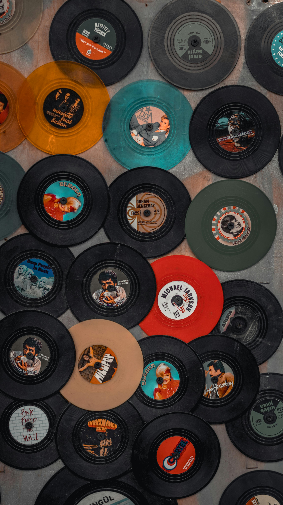

Why I Love Music
Music can completely change the mood of a day. When I am studying, I like calm songs that help me focus. When I am tired, I prefer songs that give me more energy and motivation.
I also like how music connects people. Even when people have different backgrounds, they can still enjoy the same song, rhythm, or lyrics.
Music and Creativity

Image attribution: Photo by Yunus Kılıç from Pexels .
My Favorite Things About Music
- It helps me relax after a stressful day.
- It makes studying feel easier.
- It can bring back memories.
- It helps people express feelings.
Tell Me Your Favorite Song
Type your name and your favorite song below. After you click the button, a personalized message will appear.